Key Takeaways
- Protects against SMB brute-force attacks.
- Slows repeated failed login attempts.
- Improves network security.
- Helps reduce the risk of password guessing.
- Recommended for enterprise-managed devices.
Hey, let’s discuss about how to protect Windows from password guessing attacks by delaying failed login attempts using Intune. Enable Auth Rate Limiter is a security policy. This policy controls whether the SMB server will enable or disable the authentication rate limiter. This policy applies to devices only and the supported editions are Windows 11 Pro, Enterprise, Education, IoT Enterprise.
Table of Contents
What are the Advantages of this policy?
This policy disables the SMB Authentication Rate Limiter. As a result, repeated failed SMB authentication attempts are not delayed, reducing protection against brute-force attacks.
1. Eliminates delays during SMB authentication.
2. Faster login retries after failed attempts.
3. Can simplify troubleshooting of SMB authentication issues.
Protect Windows from Password Guessing Attacks by Delaying Failed Login Attempts using Intune
This policy controls whether the SMB server will enable or disable the authentication rate limiter. This policy helps to eliminates delays during SMB authentication.
How to Create a Policy
To create the policy the first step that you need to do is to sign in to the Microsoft Intune Admin center. After signing in click on the Device and then select Configuration and click on Create>New policy.
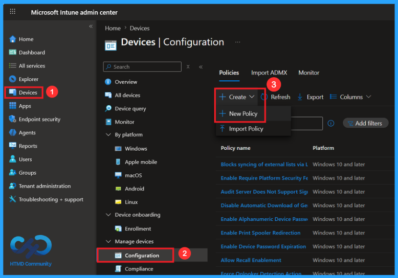
Profile Creation in this Policy
To create the policy, you must specify the Platform and Profile type. This is the second most important step in policy creation. From this window, I selected the Platform as Windows 10 and later and Profile type as Settings catalog.
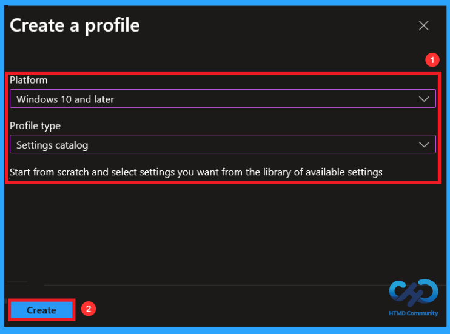
Basics Tab in this Policy
Basics Tab in the Policy. This is the first tab of a total of 5 tabs. In this tab, we give the basic information related to the policy, that is, the name and Description. Here, entering Name is mandatory, but Description is not mandatory, you can add it if you want. Here I added both. I gave the name (Enable Auth Rate Limiter) and Description as (This policy controls whether the SMB server will enable or disable the authentication rate limiter). Then click on Next.
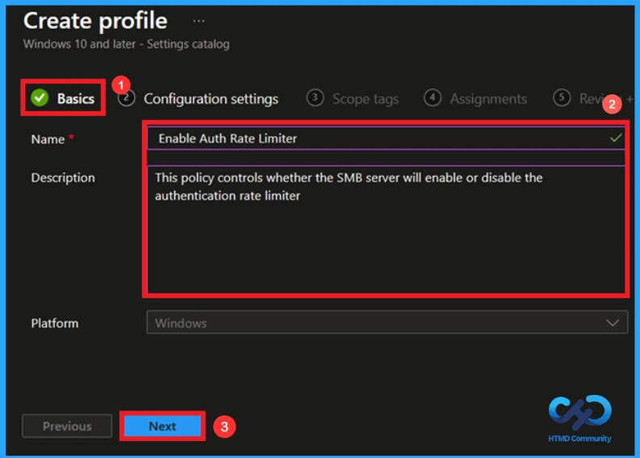
Configuration Tab to add the policy
This is the tab where you can select the policy that you want to create. To add the policy, click on the Add Settings option, and then Settings picker will appear on the screen. In this setting picker there will be a huge number of policies. Here, I selected the policy by searching its name (enable auth rate limiter). Then I clicked on its category (Lanman server). After that, I enabled the Settings Name.
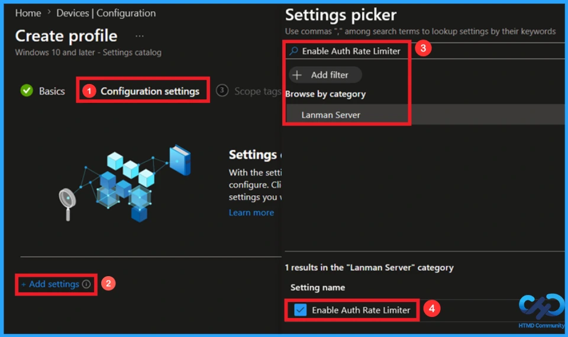
Enabled Setting in this Policy
By default, the policy will be enabled. If you don’t configure this policy setting, the authentication rate limiter may still be working depending on the delay settings (the recommended delay value is 2000ms).
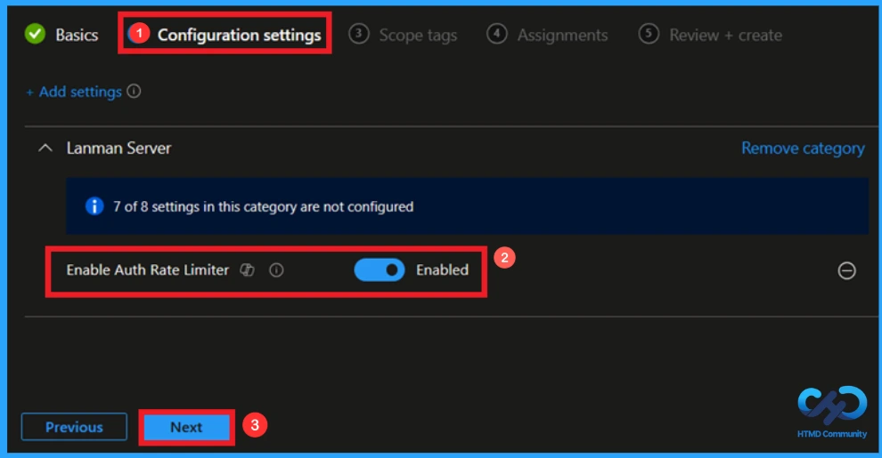
Disabling the Policy Setting
This policy controls whether the SMB server will enable or disable the authentication rate limiter. If you disable this policy setting, the authentication rate limiter won’t be enabled. Here, I created the policy by disabling by toggle the bar left to right. Then Click on Next to continue.
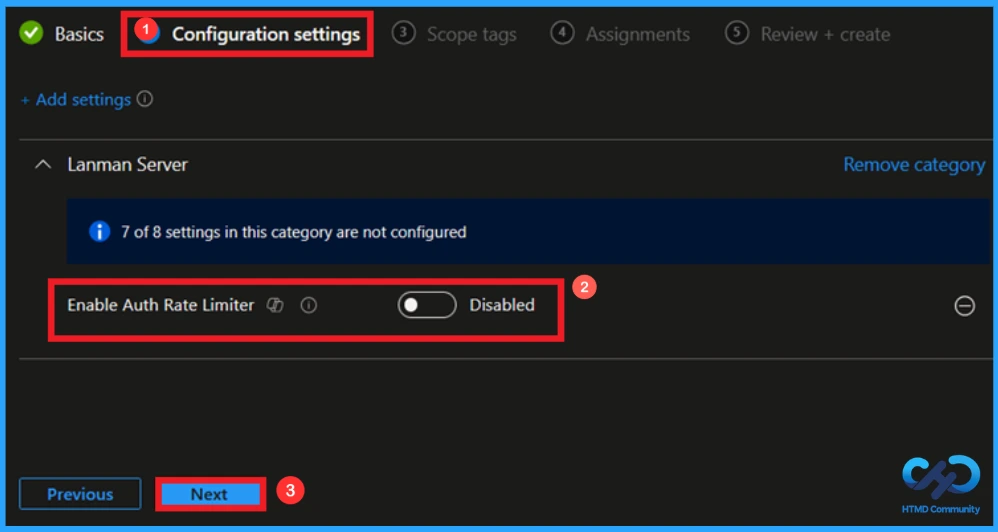
Scope Tag to Control Visibility
Scope Tag is used to control the visibility and access to Intune resources. Adding the scope tag is not a necessary step. You can add if you want, using the +Select scope tags option. Click Next to continue.

Assignment Tab to Add Group
In the Assignment Tab, you can choose the group that needs to have access to this policy. To add the group, click on the Add group. Here, I selected the add group under the include group option you can also select it under the exclude option. After that, select your group from a list of groups and click on the Select option. Then click Next to continue.

Review+Create Tab
At the Review+Create tab, you can view the details of the options that you have selected in the previous tabs. You can make any changes by clicking the previous option. After making necessary changes, click Create. Then a notification will pop up on your screen showing that your policy has been created successfully.
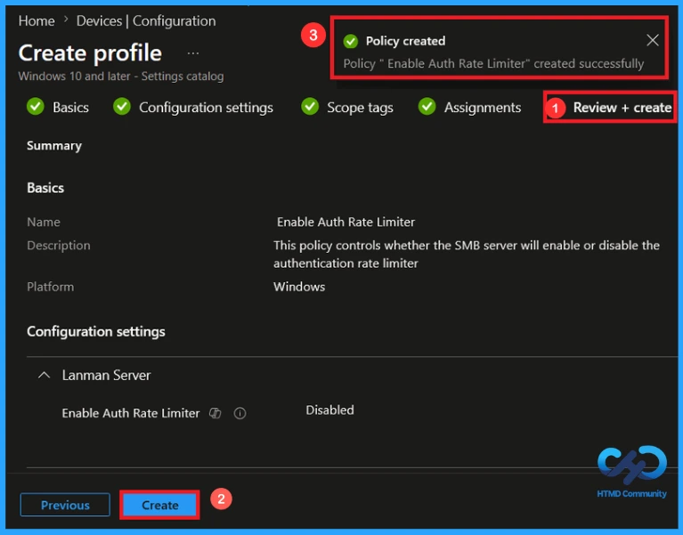
Monitoring the Status of the Policy
You can check a policy’s status in the Intune portal. Generally, it takes 8 hours for policies to be created. By using the manual sync option, you can reduce the configuration delay in the company portal app on the device, then check the status again. Navigate to Devices > Configuration. Search for the policy name(Enable Auth Rte Limiter) and check whether the succeeded value has become 1 or not.
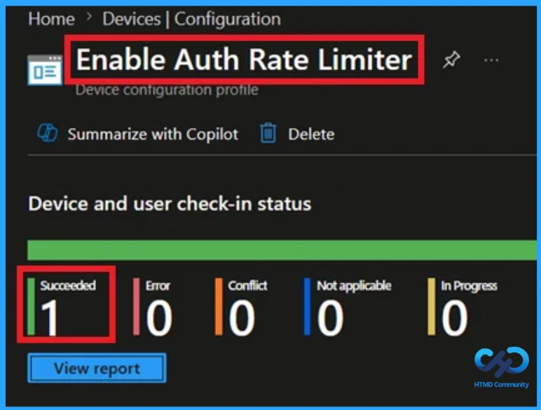
Client-Side Verification
To confirm if a policy has been applied, use the Event Viewer on the client device. Go to Applications and Services Logs > Microsoft >Windows >Device Management > Enterprise Diagnostic Provider > Admin. From the list of policies, use the Filter Current Log option and search for Intune event 813.
MDM PolicyManager: Set policy int, Policy: (EnableAuthRateLimiter), Area: (LanmanServer),
EnrollmentID requesting merge: (EB427D85-802F-46D9-A3E2-D5B414587F63), Current User:
(Device), Int: (0x0), Enrollment Type: (0x6), Scope: (0x0).
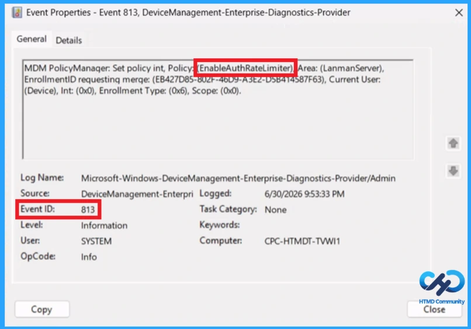
Configuration Service Provider (CSP)
The Policy Configuration Service Provider (CSP) is a feature used by organisations to manage and control settings on Windows 10 and 11 devices. It explains what each policy does, what settings or values can be used, and how it connects to older Group Policy settings (Group Policy Mapping details).
Description framework properties:
| Property name | Property value |
|---|---|
| Format | int |
| Access Type | Add, Delete, Get, Replace |
| Default Value | 1 |
Allowed values:
- 0 – Disabled
- 1(default) – Enabled
Group policy mapping:
| Name | Value |
|---|---|
| Name | Pol_EnableAuthRateLimiter |
| Friendly Name | Enable authentication rate limiter |
| Location | Computer Configuration |
| Path | Network > Lanman Server |
| Registry Key Name | Software\Policies\Microsoft\Windows\LanmanServer |
| Registry Value Name | EnableAuthRateLimiter |
| ADMX File Name | LanmanServer.admx |
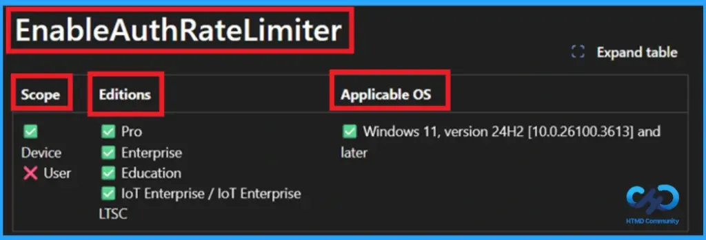
How to Remove an Assigned Group from this Policy
To remove the assigned group from a policy, go to Intune Devices>Configuration and then search for the policy name (enable auth rate limiter). Open the policy from the configuration tab and click on the edit button. Then, click on the Remove button. Click Review + Save after making the changes.
For detailed information, you can refer to our previous post – Learn How to Delete or Remove App Assignment from Intune using by Step-by-Step Guide.
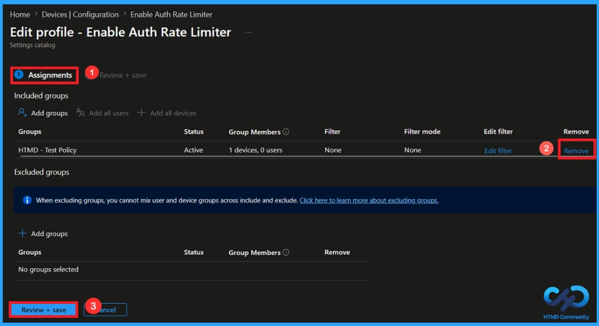
How to Delete a Policy
If you want to delete this policy for any reason, you can do it easily. First, search for the policy name (enable auth rate limiter) in the configuration section. When you find the policy name, click the 3-dot menu next to it and tap the Delete option.
For more information, you can refer to our previous post – How to Delete Allow Clipboard History Policy in Intune Step by Step Guide.
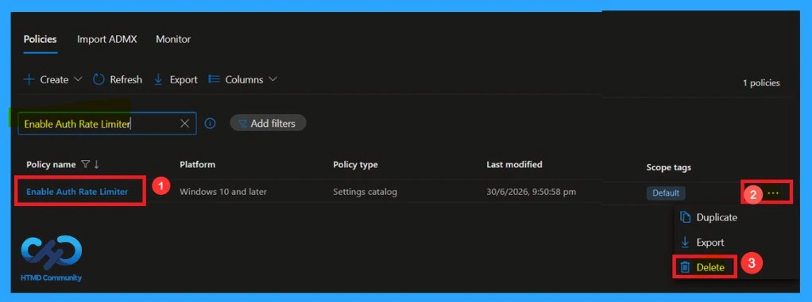
Need Further Assistance or Have Technical Questions?
Join the LinkedIn Page and Telegram group to get the latest step-by-step guides and news updates. Join our Meetup Page to participate in User group meetings. Also, Join the WhatsApp Community and WhatsApp Channel to get the latest news on Microsoft Technologies. We are there on Reddit as well.
Author
Anoop C Nair has been Microsoft MVP from 2015 onwards for 10 consecutive years! He is a Workplace Solution Architect with more than 22+ years of experience in Workplace technologies. He is also a Blogger, Speaker, and Local User Group Community leader. His primary focus is on Device Management technologies like SCCM and Intune. He writes about technologies like Intune, SCCM, Windows, Cloud PC, Windows, Entra, Microsoft Security, Career, etc.